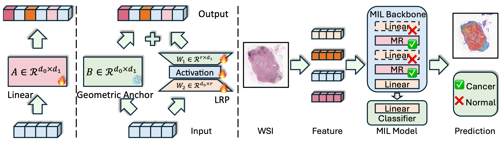
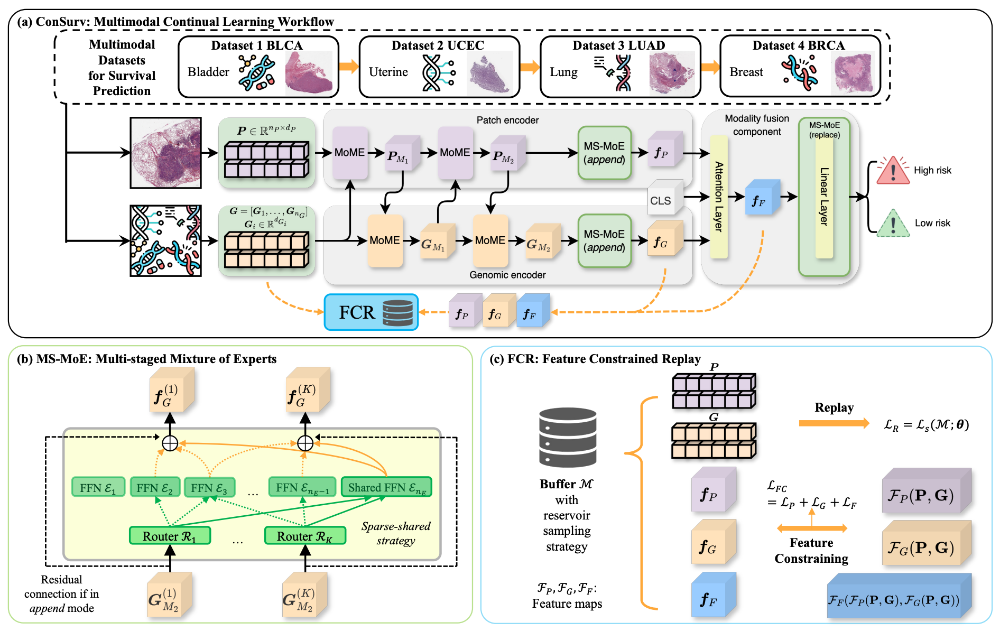
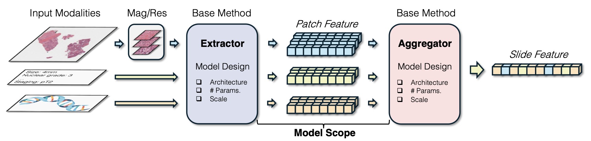
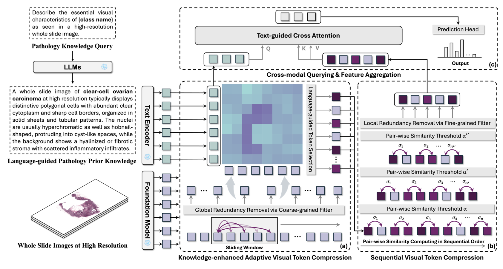
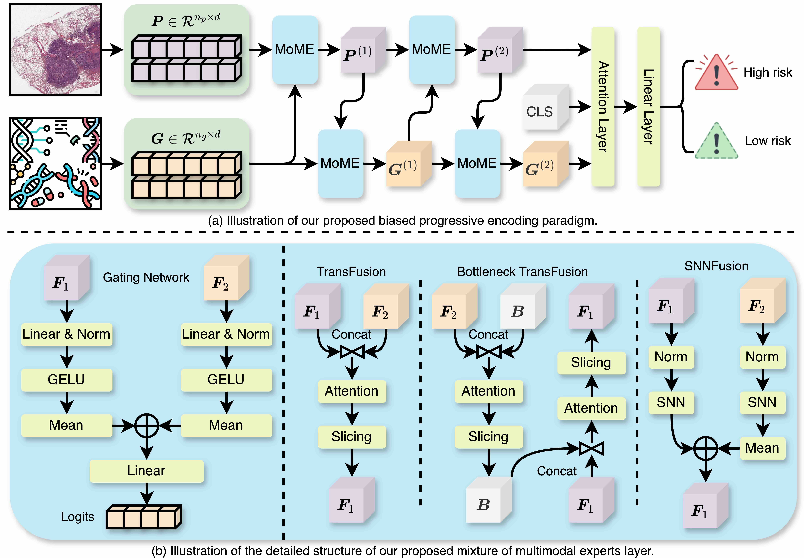
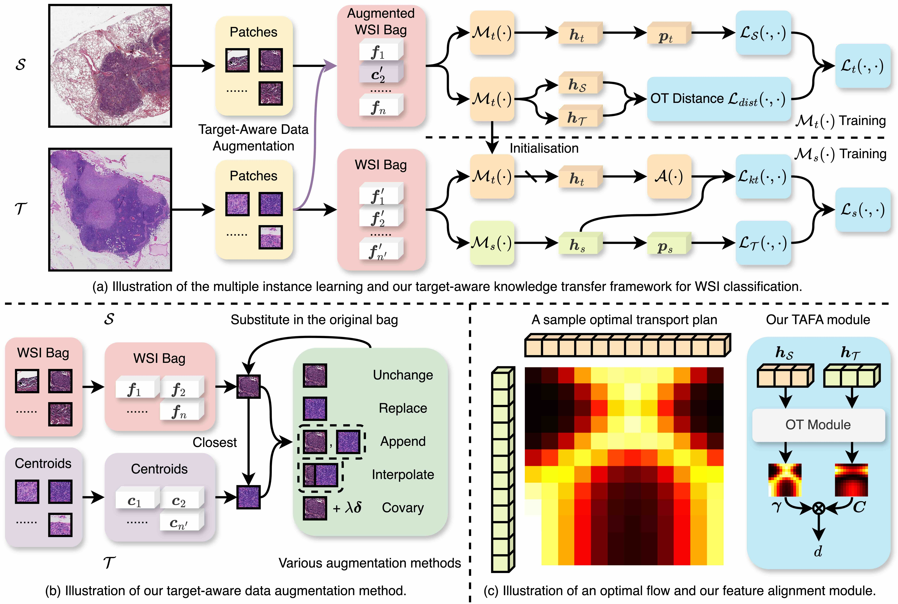
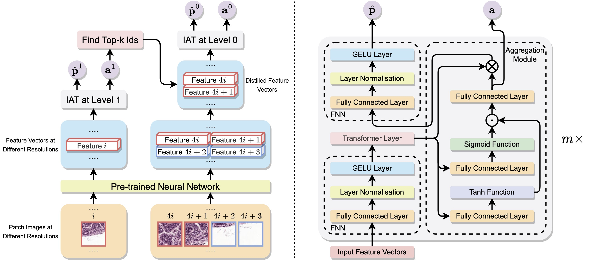
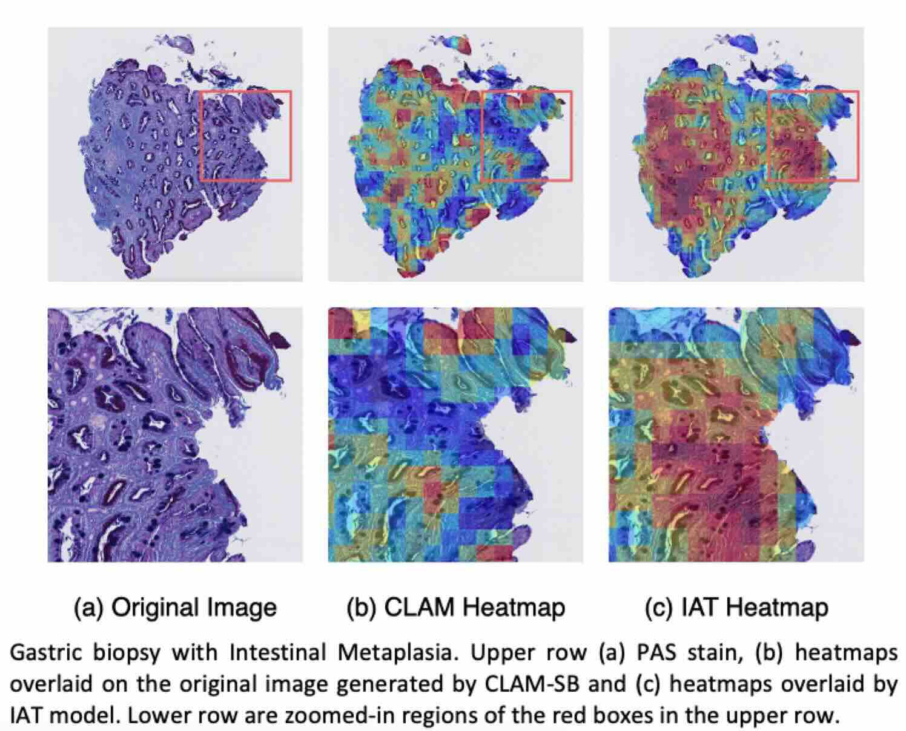
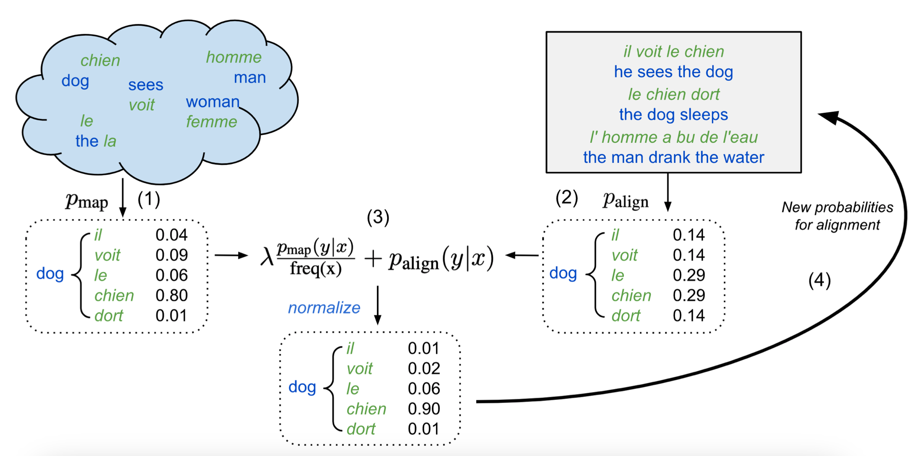

Conghao XIONGPhD Candidate
Department of Computer Science and Engineering
|
|
Biography
I am a fifth-year PhD candidate in Computer Science at The Chinese University of Hong Kong (CUHK), supervised by Prof. Irwin King, Prof. Joseph J. Y. Sung and Prof. Hao Chen. Prior to my doctoral studies at CUHK, I was a visiting and research student at the Johns Hopkins University (JHU) under the supervision of Prof. Philipp Koehn, and a visiting student at the University of Cambridge. I obtained my B.Eng. of Computer Science degree from Harbin Institute of Technology (HIT), where I have been closely working with Prof. Weinan Zhang.
My research focuses on gigapixel image understanding and multimodal learning for computational pathology. I develop data-efficient methods for whole-slide image representation, pathology foundation model feature adaptation/evaluation, visual compression, and WSI-genomics fusion, using computational pathology as a testbed for weak supervision, scarce labels, domain shift, and clinically grounded evaluation.
Before my PhD, I worked on low-resource word alignment and bilingual lexicon induction in NLP/MT. This earlier experience connects to my broader interest in representation learning and alignment across languages, images, and heterogeneous modalities.
I welcome collaborations on computational pathology, gigapixel image understanding, multimodal learning, and biomedical AI. Feel free to reach out by email.
News
- [03/2026] I was invited to a seminar talk at PuzzleLogic! [Video]
- [01/2026] Our work on few-shot WSI classification paper was accepted to ICLR 2026!
- [11/2025] Our work on continual learning for survival prediction paper was accepted to AAAI 2026, congratulations to Lucy!
- [05/2025] I was recognized as an ICLR 2025 Notable Reviewer!
- [04/2025] Our survey on pathology foundation models was accepted by IJCAI 2025 Survey Track. See you in Guangzhou!
- [02/2025] Heading to NTU, Singapore, on March!
- [02/2025] One paper on few-shot WSI classification was accepted by CVPR 2025, congratulations to Zhengrui!
- [10/2024] I was awarded as an IEEE TMI Distinguished Reviewer!
- [07/2024] I have received the PhD IMPAC Award from CUHK supporting my visit to NTU!
- [06/2024] One paper was accepted by MICCAI 2024!
- [05/2024] One paper on mixture of multimodal experts was early accepted (11%) by MICCAI 2024!
Selected Publications [Google Scholar]
* joint first authors
|
 |
Exploiting Low-Dimensional Manifold of Features for Few-shot Whole Slide Image Classification Conghao Xiong, Zhengrui Guo, Zhe Xu, Yifei Zhang, Raymond Kai-yu Tong, Si Yong Yeo, Hao Chen, Joseph J. Y. Sung, Irwin King ICLR, 2026. Topics: gigapixel image understanding, few-shot learning, pathology foundation model feature adaptation, representation geometry. |
|
 |
ConSurv: Multimodal Continual Learning for Survival Analysis Dianzhi Yu, Conghao Xiong, Yankai Chen, Wenqian Cui, Xinni Zhang, Yifei Zhang, Hao Chen, Joseph J. Y. Sung, Irwin King AAAI, 2026. Topics: multimodal learning, continual learning, WSI-genomics fusion, survival analysis. [Codes] |
|
 |
A Survey of Pathology Foundation Model: Progress and Future Directions Conghao Xiong, Hao Chen, Joseph J. Y. Sung IJCAI Survey Track, 2025 (19.6%). Topics: pathology foundation models, pretraining, evaluation, biomedical AI. |
|
 |
FOCUS: Knowledge-enhanced Adaptive Visual Compression for Few-shot Whole Slide Image Classification Zhengrui Guo, Conghao Xiong, Jiabo Ma, Qichen Sun, Lishuang Feng, Jinzhuo Wang, Hao Chen CVPR, 2025. Topics: visual compression, gigapixel image understanding, language-guided patch selection, data-efficient learning. [Codes] |
|
 |
MoME: Mixture of Multimodal Experts for Cancer Survival Prediction Conghao Xiong, Hao Chen, Hao Zheng, Dong Wei, Yefeng Zheng, Joseph J. Y. Sung, Irwin King MICCAI, 2024 (Early Accepted, 11%). Topics: multimodal fusion, mixture-of-experts, WSI-genomics learning, cross-modal interactions. |
|
 |
TAKT: Target-Aware Knowledge Transfer for Whole Slide Image Classification Conghao Xiong*, Yi Lin*, Hao Chen, Hao Zheng, Dong Wei, Yefeng Zheng, Joseph J. Y. Sung, Irwin King MICCAI, 2024. Topics: transfer learning, weak supervision, whole-slide image classification, computational pathology. [Codes] |
|
 |
Diagnose Like a Pathologist: Transformer-Enabled Hierarchical Attention-Guided Multiple Instance Learning for Whole Slide Image Classification Conghao Xiong, Hao Chen, Joseph J. Y. Sung, Irwin King IJCAI, 2023 (14.8%). Topics: multiple instance learning, transformer attention, hierarchical WSI modeling, interpretability. [Codes] |
|
 |
Mo1243 Prediction of Gastric Cancer Development from Intestinal Metaplasia Using Deep Learning Model in Gastric Biopsies Conghao Xiong, Ronald C. K. Chan, Hao Chen, Louis H. S. Lau, Irwin King, Joseph J. Y. Sung Gastroenterology, 2023. Topics: clinical AI, gastric cancer risk prediction, biopsy image analysis, computational pathology. |
|
 |
Embedding-Enhanced GIZA++: Improving Low-Resource Word Alignment Using Embeddings Kelly Marchisio, Conghao Xiong, Philipp Koehn Biennial conference of the Association for Machine Translation in the Americas, 2022. Topics: NLP, machine translation, word alignment, cross-lingual representation learning. [Codes] |
Academic Services
-
Conference Reviews:
International Conference on Machine Learning (ICML)
International Conference on Learning Representations (ICLR)
Conference on Neural Information Processing Systems (NeurIPS)
Conference on Computer Vision and Pattern Recognition (CVPR)
International Conference on Computer Vision (ICCV)
International Conference on Medical Image Computing and Computer Assisted Intervention (MICCAI)
European Conference on Computer Vision (ECCV)
International Joint Conference on Artificial Intelligence (IJCAI)
ACM International Conference on Web Search and Data Mining (WSDM)
European Conference on Machine Learning and Principles and Practice of Knowledge Discovery in Databases (ECML-PKDD)
-
Journal Reviews:
International Journal of Computer Vision (IJCV)
IEEE Transactions on Medical Imaging (TMI) (Distinguished Reviewer)
Medical Image Analysis (MedIA)
Information Fusion
IEEE Journal of Biomedical and Health Informatics (IEEE JBHI)
International Journal of Data Science and Analytics (JDSA)
IEEE Transactions on Neural Networks and Learning Systems (TNNLS)
Talk and Presentation
| PuzzleLogic | 2026 | Exploiting Structure Beyond Labels for Data-Efficient Computational Pathology [Video] |
Teaching
| CUHK | 2022 | Spring | Computers and Society (CSCI3250) |
| CUHK | 2021 | Fall | Introduction to Python (CSCI2040) |